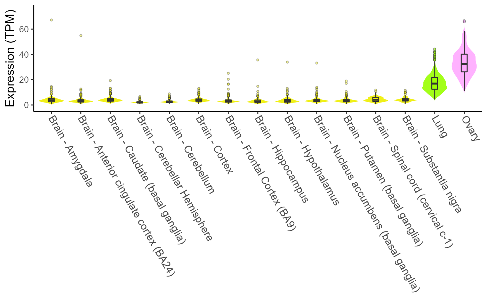
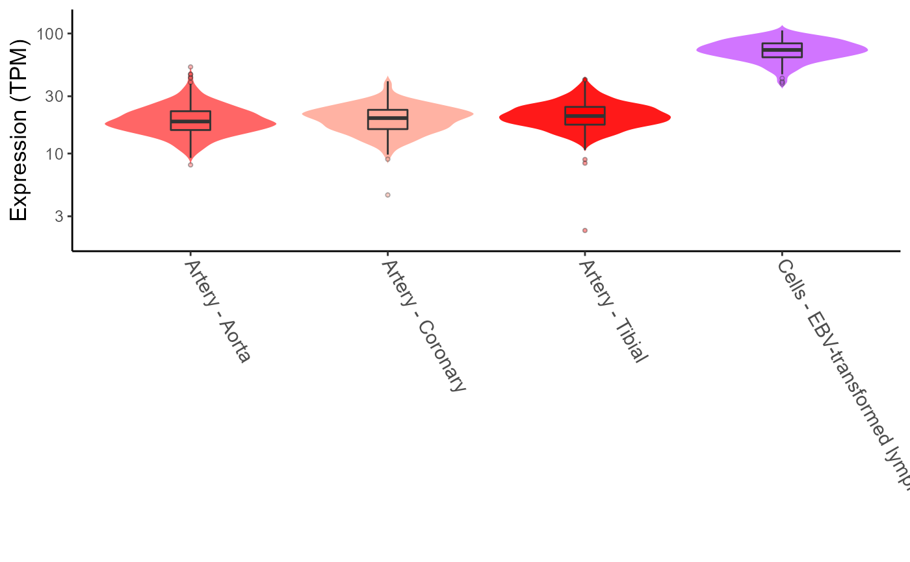
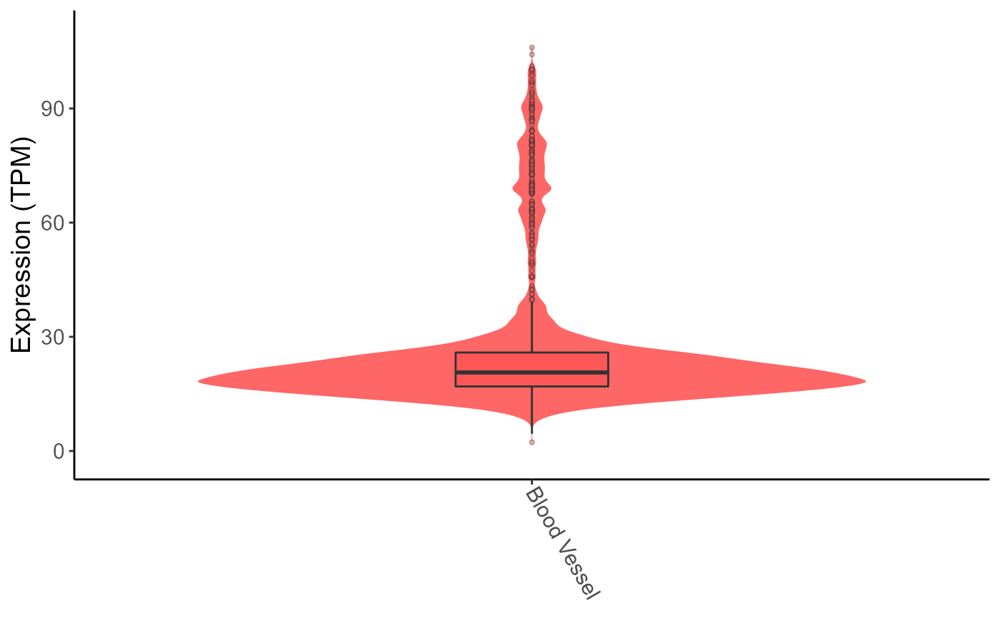

xQTLvisual_geneExpTissues
xQTLvisual_geneExpTissues.Rdplot distribution of the gene expression among multiple tissues.
Usage
xQTLvisual_geneExpTissues(
gene = "",
geneType = "auto",
tissues = "All",
datasetId = "gtex_v8",
log10y = FALSE,
toTissueSite = FALSE
)Arguments
- gene
A characer vector. Gene symbol or gencode Id.
- geneType
A character string. "auto", "geneSymbol" or "gencodeId". Default: "auto".
- tissues
A character string or a vector. "All" (default) means that all tissues is included.
- datasetId
"gtex_v8" or "gtex_v7". Default:"gtex_v8".
- log10y
Display values of expression in log scale. Default: FALSE.
- toTissueSite
TRUE or FALSE, display all subtissues or tissue Site. Default: TURE.
Examples
# \donttest{
# Display gene expression in all tissues.
# geneExpTissues <- xQTLvisual_geneExpTissues("TP53")
# Display gene expression in specified tissues.
geneExpTissues <- xQTLvisual_geneExpTissues("TP53", tissues=c("Lung", "Brain","Ovary"))
#> == Start fetching expression profiles of gene [TP53] in following tissues...
#> 1 | Lung
#> 2 | Ovary
#> 3 | Brain - Amygdala
#> 4 | Brain - Anterior cingulate cortex (BA24)
#> 5 | Brain - Caudate (basal ganglia)
#> 6 | Brain - Cerebellar Hemisphere
#> 7 | Brain - Cerebellum
#> 8 | Brain - Cortex
#> 9 | Brain - Frontal Cortex (BA9)
#> 10 | Brain - Hippocampus
#> 11 | Brain - Hypothalamus
#> 12 | Brain - Nucleus accumbens (basal ganglia)
#> 13 | Brain - Putamen (basal ganglia)
#> 14 | Brain - Spinal cord (cervical c-1)
#> 15 | Brain - Substantia nigra
#> 16 | Lung
#> 17 | Ovary
#> == This may take A few minutes... | 2022-6月-01 16:39:00
#> == Fetching expression...1/17 - Lung - 578 samples. | 2022-6月-01 16:39:06
#> == Fetching expression...2/17 - Ovary - 180 samples. | 2022-6月-01 16:39:08
#> == Fetching expression...3/17 - Brain - Amygdala - 152 samples. | 2022-6月-01 16:39:10
#> == Fetching expression...4/17 - Brain - Anterior cingulate cortex (BA24) - 176 samples. | 2022-6月-01 16:39:12
#> == Fetching expression...5/17 - Brain - Caudate (basal ganglia) - 246 samples. | 2022-6月-01 16:39:14
#> == Fetching expression...6/17 - Brain - Cerebellar Hemisphere - 215 samples. | 2022-6月-01 16:39:16
#> == Fetching expression...7/17 - Brain - Cerebellum - 241 samples. | 2022-6月-01 16:39:19
#> == Fetching expression...8/17 - Brain - Cortex - 255 samples. | 2022-6月-01 16:39:22
#> == Fetching expression...9/17 - Brain - Frontal Cortex (BA9) - 209 samples. | 2022-6月-01 16:39:24
#> == Fetching expression...10/17 - Brain - Hippocampus - 197 samples. | 2022-6月-01 16:39:26
#> == Fetching expression...11/17 - Brain - Hypothalamus - 202 samples. | 2022-6月-01 16:39:29
#> == Fetching expression...12/17 - Brain - Nucleus accumbens (basal ganglia) - 246 samples. | 2022-6月-01 16:39:31
#> == Fetching expression...13/17 - Brain - Putamen (basal ganglia) - 205 samples. | 2022-6月-01 16:39:33
#> == Fetching expression...14/17 - Brain - Spinal cord (cervical c-1) - 159 samples. | 2022-6月-01 16:39:35
#> == Fetching expression...15/17 - Brain - Substantia nigra - 139 samples. | 2022-6月-01 16:39:36
#> == Fetching expression...16/17 - Lung - 578 samples. | 2022-6月-01 16:39:42
#> == Fetching expression...17/17 - Ovary - 180 samples. | 2022-6月-01 16:39:44
#> == Done

# Display gene expression in log scale in specified tissues.
geneExpTissues <- xQTLvisual_geneExpTissues("TP53", tissues="Blood Vessel", log10y=TRUE)
#> == Start fetching expression profiles of gene [TP53] in following tissues...
#> 1 | Artery - Aorta
#> 2 | Artery - Coronary
#> 3 | Artery - Tibial
#> 4 | Cells - EBV-transformed lymphocytes
#> == This may take A few minutes... | 2022-6月-01 16:39:45
#> == Fetching expression...1/4 - Artery - Aorta - 432 samples. | 2022-6月-01 16:39:49
#> == Fetching expression...2/4 - Artery - Coronary - 240 samples. | 2022-6月-01 16:39:52
#> == Fetching expression...3/4 - Artery - Tibial - 663 samples. | 2022-6月-01 16:39:58
#> == Fetching expression...4/4 - Cells - EBV-transformed lymphocytes - 174 samples. | 2022-6月-01 16:40:00
#> == Done

# Display gene expression in whole tissue.
geneExpTissues <- xQTLvisual_geneExpTissues("TP53", tissues="Blood Vessel", toTissueSite=TRUE)
#> == Start fetching expression profiles of gene [TP53] in following tissues...
#> 1 | Artery - Aorta
#> 2 | Artery - Coronary
#> 3 | Artery - Tibial
#> 4 | Cells - EBV-transformed lymphocytes
#> == This may take A few minutes... | 2022-6月-01 16:40:00
#> == Fetching expression...1/4 - Artery - Aorta - 432 samples. | 2022-6月-01 16:40:04
#> == Fetching expression...2/4 - Artery - Coronary - 240 samples. | 2022-6月-01 16:40:07
#> == Fetching expression...3/4 - Artery - Tibial - 663 samples. | 2022-6月-01 16:40:13
#> == Fetching expression...4/4 - Cells - EBV-transformed lymphocytes - 174 samples. | 2022-6月-01 16:40:15
#> == Done

# }